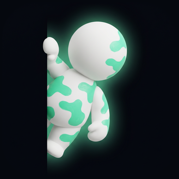

KAMO
Hide a kamo so well your friends can't spot it
Point, paint, vanish. Then dare your friends to find it.
Start playingFree on iPhone
How it worksWhat is KAMO?
KAMO is a hide-and-seek game played through your camera. You point your phone at anything in front of you — a desk, a wall, a pavement, the middle of the street — and drop in a kamo: a tiny figure that starts out obvious.
Then you paint it. With your finger, straight onto the live world, you colour the kamo until it takes on whatever is behind it. Get it right and it disappears into the photo. Get it wrong and it sticks out like a sore thumb. A score tells you how well you actually blended in.
The part people replay is the reveal: KAMO plays back the scene the way everyone else sees it, then wipes across to show exactly where your kamo was hiding. That before/after clip is what you send to a friend — or post — and it is the whole game in six seconds.
How to play
Point at anything
Open the camera on any surface with texture — brick, wood grain, a rug, gravel. Busy beats plain.
Drop a kamo in
Place the figure where you want it hidden. Corners, edges and shadows are where a kamo disappears best.
Paint it until it's gone
Pick up the colours around it and paint them onto the figure. When your eye can no longer find it, neither can theirs.
Send the hide
Share the shot and let them hunt. The reveal only plays once they've given up — or found it.
Hides you mark Public land in the KAMO feed, where strangers try to spot them too. You choose public or private before you share, and you can change it any time.
Meccha Chameleon, but in your camera
If you've seen the Meccha Chameleon clips — a little chameleon figure painted to match the surface it's standing on, then filmed until nobody can find it — KAMO is that game without the paint, the figure, or the drying time.
Same instinct, same payoff: the satisfaction of something vanishing in plain sight, and the small cruelty of handing it to a friend and saying find it. The difference is that a kamo takes about a minute, costs nothing, and lives in your camera roll instead of your desk.
Is there a Meccha Chameleon app for iPhone? →
Read the guide to hiding a kamo nobody finds →
Questions
Is KAMO free?
Yes. The game is free to download and play, with no signup — open it and you're in. KAMO+ is an optional upgrade that unlocks every brush size, the full colour palette, more time to paint each round, and exports without the KAMO watermark.
What does KAMO+ cost?
KAMO+ Weekly is an auto-renewable subscription at $2.99 per week, and KAMO Lifetime is a one-time purchase. Prices vary by region and the exact price is always shown in the app before you buy.
Which phones does it run on?
iPhone, iOS 15.1 or later. There is no Android version yet.
Do I need special hardware — LiDAR, AR kit, a new phone?
No. KAMO uses the ordinary camera. If your phone can take a photo, it can hide a kamo.
How is the score calculated?
It compares the colours you painted onto the kamo with the colours immediately around it. The closer the match — and the more of the figure you cover — the higher the score.
Can I send a hide to someone who doesn't have the app?
Yes. Every hide gets a link that opens in any browser, so they can hunt for the kamo before they ever install anything.
Read on
Where to hide a kamo — a short guide for each surface people actually point at: brick, gravel, grass, bark, snow, a cluttered desk. What each one does to a hide, and the mistake that gives it away.
Camera games, honestly compared — camouflage apps, phone hide-and-seek, AR games and hidden-object puzzles, including where KAMO isn't the answer.
Ideas — group chats, parties, long-distance friends, and a room full of relatives who won't get out of their chairs.